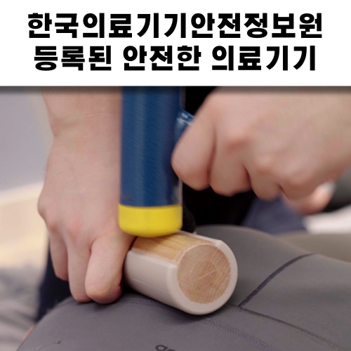

공간척추정형술(SART)은 좁아진 척추 분절 사이의 간격을 물리적으로 확장하여 신경 압박을 해소하는 정밀 척추정렬회복술입니다. 척추도인안교학회 이사 이동해 원장이 40,000례 이상의 임상을 통해 정립한 비수술 치료의 핵심입니다.
 바디올한의원 전용 교정실: 인상기를 통해 하중을 제어하고 척추 마디 사이의 공간을 확보합니다.
바디올한의원 전용 교정실: 인상기를 통해 하중을 제어하고 척추 마디 사이의 공간을 확보합니다.
수원 허리통증 병원이나 척추병원을 찾는 환자분들의 디스크 돌출과 협착증은 사실 척추 공간이 좁아지며 발생한 '결과'입니다. 척추 마디가 눌리면 추간판(디스크)은 밀려날 수밖에 없습니다.
[Image of the human spinal column]SART는 이 좁아진 공간을 다시 열어주어 신경 압박을 즉각 해소하고, 디스크가 제자리로 돌아가도록 유도합니다.
인체의 주춧돌인 골반의 틀어짐을 가장 먼저 바로잡습니다. 골반이 수평을 이루어야 척추 정렬이 유지됩니다.
특수 장비인 인상기를 활용하여 척추 마디마디를 정밀하게 견인합니다. 이때 눌려있던 신경근과 혈관이 소통을 시작합니다.
 이동해 원장의 정교한 수기 기법으로 척추의 미세 정렬을 회복합니다.
이동해 원장의 정교한 수기 기법으로 척추의 미세 정렬을 회복합니다.
확보된 공간을 바탕으로 틀어진 분절을 교정망치로 세밀하게 타격하여 제자리로 복원합니다.

한국의료기기안전정보원 등록 장비인 교정망치로 뼈를 하나하나 정밀하게 교정합니다.Director's Insight:
척추도인안교학회 이사로서 4만 명 이상의 환자를 치료하며 얻은 확신은, 수술 없이도 척추 공간만 회복되면 인체는 스스로 치유된다는 점입니다. 단순 추나를 넘어선 정밀 정형술의 힘을 경험해 보십시오.
Spinal disorders often stem from narrowed spaces between vertebrae. SART creates the physical room necessary for nerves to breathe and discs to reposition naturally.
腰椎间盘突出和管腔狭窄的根源在于脊柱空间的丧失。SART 通过物理方式拉开间隙，让受压的神经重新获得通畅。